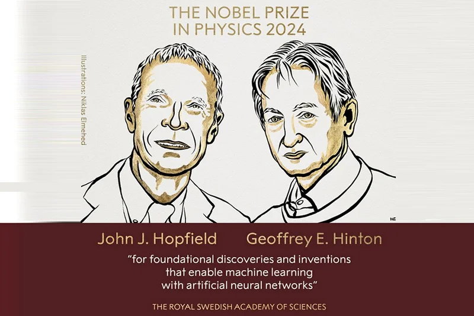
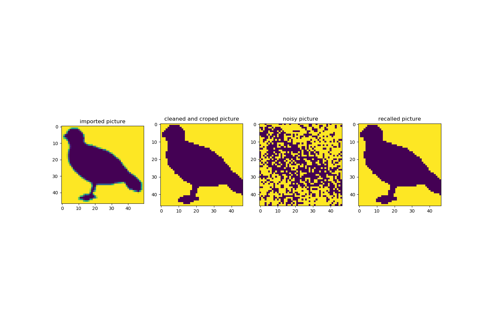
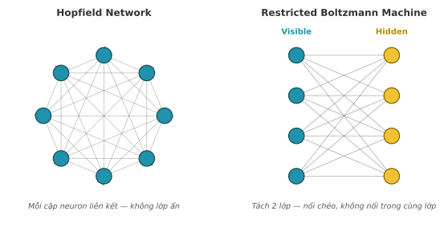
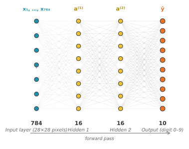
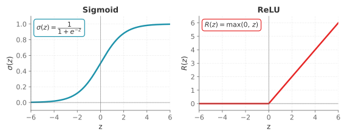
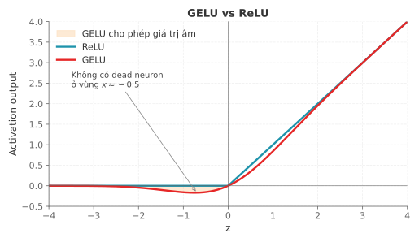
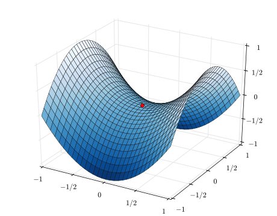
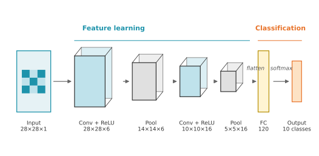

Học máy
Bài 11: Giới thiệu về Mạng Nơ-ron
Trường ĐH Công nghệ – Đại học Quốc gia Hà Nội
Nội dung buổi học
- Lịch sử mạng nơ-ron
- Mạng nơ-ron là gì?
- Loss Function
- Gradient Descent & Backpropagation
- Kiến trúc hiện đại
1.
Lịch Sử
Mạng Nơ-ron
Dòng thời gian phát triển
- 1943 — McCulloch & Pitts: mô hình neuron nhân tạo đầu tiên
- 1958 — Rosenblatt: Perceptron — mạng học đơn giản đầu tiên
- 1982 — John Hopfield: Hopfield Network
- 1986 — Hinton phổ biến Backpropagation
- 1998 — LeCun: LeNet — CNN đầu tiên nhận dạng chữ số
- 2012 — AlexNet: bùng nổ Deep Learning
- 2017 — Transformer: "Attention is All You Need"
- 2024 — Nobel Vật lý trao cho Hopfield & Hinton
Nobel Vật lý 2024

Hopfield & Hinton — Nobel Vật lý 2024 cho những đóng góp nền tảng về mạng nơ-ron
John Hopfield — Hopfield Network (1982)
Lý thuyết bộ nhớ liên kết (Tailspin Theory)
- Mạng hồi quy (Recurrent) — các neuron kết nối lẫn nhau
- Hệ thống có hàm năng lượng — tìm điểm cực tiểu như vật lý thống kê
- Bộ nhớ = điểm thu hút (attractor) — mạng "nhớ lại" pattern từ dữ liệu nhiễu
- Ứng dụng: nhận dạng chữ viết tay bị mờ hoặc thiếu
Hopfield Network — Bộ nhớ liên kết

Input bị nhiễu → mạng hội tụ về pattern gốc được lưu trong bộ nhớ
Geoffrey Hinton — Giải pháp RBM
Vấn đề: Hopfield Net không học được từ dữ liệu lớn
- Restricted Boltzmann Machines (RBM): mạng xác suất 2 lớp (ẩn + nhìn)
- Phổ biến hóa Backpropagation (1986) — nền tảng của mọi mạng hiện đại
Kiến trúc Hopfield & Boltzmann Machine

Hopfield Network (trái) vs Restricted Boltzmann Machine (phải) — RBM tách thành 2 lớp rõ ràng
2.
Mạng Nơ-ron
là gì?
Ví dụ: MNIST

Bài toán: Cho ảnh 28×28 pixel (784 điểm ảnh) → phân loại chữ số 0–9
Kiến trúc mạng MNIST

784 → 16 → 16 → 10 neurons — mỗi kết nối là một trọng số cần học
Cấu trúc mạng — Layers
- Input layer: 784 neurons (1 neuron = 1 pixel)
- Hidden layer 1: 16 neurons
- Hidden layer 2: 16 neurons
- Output layer: 10 neurons (1 neuron = 1 chữ số 0–9)
Neuron (Perceptron) — Đơn vị cơ bản
- Nhận nhiều giá trị đầu vào \(x_1, x_2, \ldots\)
- Mỗi đầu vào có trọng số \(w_j\)
- Cộng thêm bias \(b\)
- Áp dụng hàm kích hoạt
- Xuất ra một giá trị trong \([0, 1]\)
Công thức:
\[ z = w_1 x_1 + w_2 x_2 + \ldots + b \]
\[ a = \sigma(z) = \dfrac{1}{1 + e^{-z}} \]
ReLU: \(a = \max(0, z)\) — phổ biến hơn hiện nay.
Hàm kích hoạt (Activation Functions)
Đưa tính phi tuyến vào mạng — nếu không có, nhiều lớp = 1 lớp tuyến tính
- Sigmoid: \( \dfrac{1}{1+e^{-z}} \) — output \(\in(0,1)\), dùng cho xác suất nhị phân
- Tanh: output \(\in(-1,1)\) — hay dùng trong RNN/LSTM
- ReLU: \( \max(0,z) \) — mặc định cho deep network, nhưng có dead neuron
- GELU: \( x \cdot \sigma(1.702x) \) — mặc định trong Transformer
Sigmoid vs ReLU

Sigmoid bão hòa ở 2 đầu (vanishing gradient) — ReLU tuyến tính ở vùng dương, kill hẳn ở vùng âm
GELU vs ReLU

GELU cho phép giá trị âm nhỏ lọt qua ở vùng x ≈ −0.5 — không có dead neuron, gradient luôn tồn tại
Trọng số \(w\) và Bias \(b\)
- Trọng số \(w_j\): điều chỉnh tầm quan trọng của từng kết nối.
- Bias \(b\): dịch chuyển ngưỡng kích hoạt.
→ Cần một thước đo sai số, và một thuật toán tối ưu hoá!
3.
Loss Function
Đo mức độ sai — để biết phải sửa theo hướng nào
Loss Function (1/4) — Mean Squared Error
Dùng cho bài toán hồi quy — output là giá trị liên tục
\[ \mathcal{L}_{\text{MSE}} = \frac{1}{n} \sum_{i=1}^{n} (y_i - \hat{y}_i)^2 \]- Phạt nặng lỗi lớn (do bình phương)
- Nhạy với outlier
- Gradient: \( \dfrac{\partial \mathcal{L}}{\partial \hat{y}_i} = -\dfrac{2}{n}(y_i - \hat{y}_i) \)
Lưu ý: Có thể dùng Squared Error (không chia n) — cùng hướng gradient, khác hằng số tỉ lệ
Loss Function (2/4) — Binary Cross-Entropy
Dùng cho bài toán phân loại nhị phân — 1 trong 2 lớp
\[ \mathcal{L}_{\text{BCE}} = -\frac{1}{n}\sum_{i=1}^{n} \Big[ y_i \log\hat{p}_i + (1 - y_i)\log(1 - \hat{p}_i) \Big] \]- Output layer dùng Sigmoid → \(\hat{p} \in (0,1)\)
- Gradient sạch: \(\partial L/\partial z = \hat{y} - y\)
- Sigmoid + BCE triệt tiêu nhau khi tính đạo hàm → không vanish
Chẩn đoán bệnh: có / không
Sigmoid + BCE luôn đi cùng nhau
Loss Function (3/4) — Categorical Cross-Entropy
Dùng cho bài toán phân loại đa lớp — 1 trong K lớp
\[ \mathcal{L}_{\text{CCE}} = -\sum_{k=1}^{K} p_k^* \log(p_k) = -\log\, p(y = k^* \mid x) \]- Output layer dùng Softmax
- Nhãn thực là one-hot vector \(p^* = (0,\ldots,1,\ldots,0)\)
- Chỉ class đúng đóng góp vào loss
- Phạt rất nặng khi tự tin sai
\(-\log(0.99) \approx 0.01\) ✅ tự tin đúng
\(-\log(0.01) \approx 4.6\) ❌ tự tin sai
Loss Function (4/4) — Khi nào dùng gì?
| Loss Function | Bài toán | Output layer | Ví dụ |
|---|---|---|---|
| MSE | Hồi quy | Linear | Dự đoán giá nhà, nhiệt độ |
| MAE | Hồi quy (có outlier) | Linear | Dự đoán doanh thu |
| Binary CE | Phân loại nhị phân | Sigmoid | Spam, chẩn đoán bệnh |
| Categorical CE | Phân loại đa lớp | Softmax | MNIST, ImageNet, NLP |
Softmax + CCE | Sigmoid + BCE | Linear + MSE/MAE
4.
Gradient Descent & Backpropagation
Backpropagation — Tổng quan
Mục tiêu: tìm gradient \(\partial L / \partial w\) cho từng trọng số để update
So sánh \(\hat{y}\) với \(y_{true}\)
ra một con số đo độ sai
Chain rule: \(\partial L/\partial w\)
cho từng \(w\) riêng biệt
\(w \leftarrow w - \eta \cdot \partial L/\partial w\)
tìm giá trị \(w\) mới
Dùng gradient mới truyền về layer trước — lặp đến layer đầu tiên
Mỗi layer phải chờ layer sau hoàn thành bước ② và ③ mới tính được
Ý tưởng Gradient Descent
- Gradient \(\nabla_w \mathcal{L}\): hướng tăng nhanh nhất của loss.
- Ta đi ngược chiều gradient → loss giảm nhanh nhất.
- Công thức cập nhật: \[ w \leftarrow w - \eta \, \dfrac{\partial \mathcal{L}}{\partial w} \]
- \(\eta\) (learning rate): bước đi dài hay ngắn.
Gradient cho biết 2 thứ
1. Hướng — nên tăng hay giảm \(w\)?
- \(\partial \mathcal{L} / \partial w\) âm → loss giảm khi \(w\) tăng → tăng \(w\).
- \(\partial \mathcal{L} / \partial w\) dương → loss tăng khi \(w\) tăng → giảm \(w\).
→ \(w_{\text{mới}} = 0 - 0.01 \cdot (-22) = +0.22\) ✅
\(\partial \mathcal{L} / \partial w = +15\) (dương)
→ \(w_{\text{mới}} = w - 0.01 \cdot 15\) → giảm xuống ✅
2. Độ lớn — còn xa minimum không?
- \(|\nabla \mathcal{L}|\) lớn → đang ở sườn dốc, còn xa minimum.
- \(|\nabla \mathcal{L}|\) nhỏ → gần phẳng, gần minimum.
- \(\nabla \mathcal{L} \approx 0\) → đã đến đáy, dừng.
Bước 2: \(\nabla \mathcal{L} = -20.68\) → bớt dốc
Bước 3: \(\nabla \mathcal{L} = -19.44\) → tiếp tục giảm
\(\vdots\)
Bước \(n\): \(\nabla \mathcal{L} \approx 0\) → dừng ✅
Tính Gradient — Chain Rule
Để cập nhật trọng số \(w\), ta cần \(\partial L / \partial w\) — nhưng \(w\) không ảnh hưởng trực tiếp đến \(L\):
\[ w \;\longrightarrow\; z \;\longrightarrow\; \hat{y} \;\longrightarrow\; L \]Phải dùng chain rule — tính từng mắt xích:
\[ \frac{\partial L}{\partial w} = \frac{\partial L}{\partial \hat{y}} \cdot \frac{\partial \hat{y}}{\partial z} \cdot \frac{\partial z}{\partial w} \]- \(\partial L / \partial \hat{y}\) — đạo hàm loss.
- \(\partial \hat{y} / \partial z\) — đạo hàm activation.
- \(\partial z / \partial w = x\) — đạo hàm linear.
\(\partial L / \partial z = \hat{y} - y\)
Mọi thứ triệt tiêu nhau!
Tại sao cần lan truyền ngược?
Mục tiêu: tính \(\dfrac{\partial L}{\partial w}\) — "nếu tôi thay đổi \(w\) một chút, \(L\) thay đổi bao nhiêu?"
Hình dung theo kiểu "cú hích nhỏ" (nudge) của 3Blue1Brown:
- Hích \(w\) một chút nhỏ \(\delta w\).
- → \(z\) thay đổi: \(\delta z = \delta w \cdot x\) (vì \(z = wx + b\)).
- → \(a\) thay đổi: \(\delta a = \delta z \cdot \sigma'(z)\) (qua hàm kích hoạt).
- → \(L\) thay đổi: \(\delta L = \delta a \cdot \dfrac{\partial L}{\partial a}\).
Backpropagation
- Mạng 13 000 tham số → cần 13 000 đạo hàm riêng \(\partial L / \partial w_j\).
- Backprop: tính tất cả gradient trong một lần truyền ngược.
Mỗi layer phải chờ layer sau tính xong mới tính được.
- Forward pass: tính \(\hat{y}\), lưu lại giá trị trung gian \(z^{(\ell)}, a^{(\ell)}\).
- Tính loss: so sánh \(\hat{y}\) với nhãn thực \(y\).
- Backward pass: chain rule từ output ngược về input.
- Cập nhật: \(w \leftarrow w - \eta \, \dfrac{\partial L}{\partial w}\).
Vấn đề thực tế — Dead Neuron & Vanishing Gradient
Dead Neuron (ReLU)
- ReLU: \(\max(0, z)\) → đạo hàm = 0 khi \(z \le 0\)
- Gradient = 0 → weight không bao giờ được update
- Neuron "chết" mãi mãi
- Giải pháp: Leaky ReLU, GELU
Vanishing Gradient (Sigmoid)
- Đạo hàm sigmoid tối đa = 0.25
- Nhân qua nhiều lớp → gradient tiệm cận 0
- Layer đầu không học được
- Giải pháp: ReLU, Batch Norm, ResNet
Local Minima & Saddle Point
Local Minima
- Gradient = 0 nhưng chưa phải đáy thật
- Trong không gian 13.000 chiều, local minima rất hiếm
- Local minima tìm được thường gần bằng global minima
Saddle Point
- Gradient = 0, nhưng một số chiều dốc lên, chiều khác dốc xuống
- Phổ biến hơn local minima trong mạng sâu
- GD dễ bị kẹt ở đây hơn
Ví dụ Saddle Point

Batch GD vs SGD vs Mini-batch
- Batch GD: dùng toàn bộ dữ liệu mỗi bước → chính xác nhưng rất chậm
- SGD: dùng 1 mẫu ngẫu nhiên mỗi bước → nhanh nhưng dao động nhiều
- Mini-batch SGD: dùng 32–256 mẫu → cân bằng tốt nhất ✅
Batch GD chỉ update 1 lần mỗi epoch
Noise của mini-batch giúp thoát local minima & saddle point tốt hơn Batch GD
Learning Rate & Optimizer
Quy tắc cập nhật cơ bản: \( w \leftarrow w - \eta \, \dfrac{\partial L}{\partial w} \).
- 🐌 \(\eta\) quá nhỏ: học rất chậm, dễ bị kẹt.
- 🐇 \(\eta\) quá lớn: dao động, không hội tụ.
- ✅ \(\eta\) vừa: hội tụ nhanh và ổn định.
5.
Kiến Trúc Hiện Đại
RNN · LSTM · CNN · Transformer
RNN — Recurrent Neural Network
Ứng dụng: dịch thuật, phân tích cảm xúc, dự báo chuỗi thời gian
✅ Ưu điểm
- Xử lý được chuỗi dữ liệu (văn bản, âm thanh)
- Chia sẻ trọng số theo thời gian
- Có "bộ nhớ" về các bước trước
❌ Nhược điểm
- Vanishing gradient — quên dữ liệu xa
- Không song song hóa được — chậm
- Khó học phụ thuộc dài hạn
RNN — Vanishing & Exploding Gradient
Mỗi bước thời gian RNN tính: \(h_t = \tanh(W \cdot h_{t-1} + U \cdot x_t)\)
Backprop qua T bước phải nhân gradient liên tiếp:
\[ \frac{\partial L}{\partial h_1} = \frac{\partial L}{\partial h_T} \times \prod_{t=2}^{T} \underbrace{W \times \tanh'(h_t)}_{\lambda \text{ — hệ số mỗi bước}} \]Vanishing — \(\lambda = 0.5\)
Bước 5→4: × 0.5 = 0.5
Bước 4→3: × 0.5 = 0.25
Bước 3→2: × 0.5 = 0.125
Bước 2→1: × 0.5 = 0.0625 ≈ 0Exploding — \(\lambda = 2.0\)
Bước 5→4: × 2.0 = 2
Bước 4→3: × 2.0 = 4
Bước 3→2: × 2.0 = 8
Bước 2→1: × 2.0 = 16 → ∞Exploding: dùng Gradient Clipping | Vanishing: cần đổi kiến trúc → LSTM / GRU
LSTM — Long Short-Term Memory
Ứng dụng: dự báo ngôn ngữ, nhận dạng giọng nói, dịch máy
- Giải quyết vanishing gradient của RNN qua cơ chế cổng (gate)
- Forget gate: quyết định bỏ thông tin cũ
- Input gate: quyết định lưu thông tin mới
- Output gate: quyết định xuất thông tin nào
CNN — Convolutional Neural Network
Ứng dụng: nhận dạng ảnh, phát hiện vật thể, phân tích ảnh y tế
- Convolution: bộ lọc trượt qua ảnh để phát hiện pattern cục bộ
- Pooling: giảm kích thước, giữ thông tin quan trọng
- Chia sẻ trọng số: cùng bộ lọc áp dụng cho toàn ảnh → ít tham số hơn
Ví dụ CNN

Transformer & Self-Attention
"Attention is All You Need" (2017) — Google Brain
- Self-Attention: mỗi từ "nhìn" tất cả các từ khác để hiểu ngữ cảnh
- Song song hóa hoàn toàn → nhanh hơn RNN/LSTM rất nhiều
- Nền tảng của: GPT, BERT, Gemini, Claude, LLaMA…
So sánh tổng hợp
| Kiến trúc | Dữ liệu tốt nhất | Ưu điểm chính | Nhược điểm chính | Ví dụ |
|---|---|---|---|---|
| RNN | Chuỗi ngắn | Xử lý tuần tự | Vanishing gradient | Sentiment analysis |
| LSTM | Chuỗi dài | Bộ nhớ dài hạn | Phức tạp, chậm | Dịch máy, ASR |
| CNN | Hình ảnh, âm thanh | Nhận dạng pattern | Kém quan hệ xa | ImageNet, YOLO |
| Transformer | Văn bản, đa phương thức | Song song, attention | Chi phí khổng lồ | GPT, BERT, Gemini |
Tóm tắt
- Mạng nơ-ron học bằng cách điều chỉnh 13.000+ trọng số qua dữ liệu
- Loss function đo sai số — chọn đúng loss cho đúng bài toán
- Gradient Descent + Backprop = "động cơ" tối ưu hóa toàn bộ tham số
- SGD, dead neuron, vanishing gradient — những vấn đề thực tế cần giải quyết
- Transformer đang thống trị nhờ song song hóa và self-attention
Câu hỏi mở: Theo bạn, kiến trúc nào sẽ "thay thế" Transformer trong tương lai?
Tài liệu tham khảo
- 3Blue1Brown. (2017). Neural Networks [Video series]. YouTube. youtube.com/3b1b-neural-networks
- Starmer, J. (2019). Neural Networks [Video series]. StatQuest. youtube.com/@statquest
- Goodfellow, I., Bengio, Y., & Courville, A. (2016). Deep Learning. MIT Press. deeplearningbook.org
- Zhang, A. et al. (2023). Dive into Deep Learning. d2l.ai
- Ng, A. (2017). Deep Learning Specialization. Coursera / DeepLearning.AI. deeplearning.ai
- Vaswani, A. et al. (2017). Attention is all you need. NeurIPS 2017.
- LeCun, Y., Bengio, Y., & Hinton, G. (2015). Deep learning. Nature, 521, 436–444.